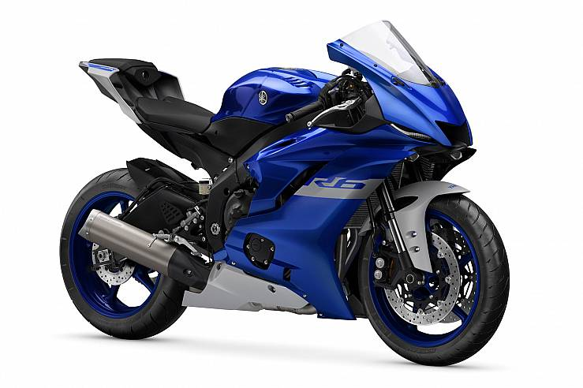

"No la pude comprar, pero seguiré soñando con ella." - Walter Osorio
Introducida en 1999, la Yamaha YZF-R6 se ha convertido en una de las piezas clave en el segmento de las motos deportivas, junto con modelos como la Suzuki Gixxer o la Kawasaki Ninja. Su motor de cuatro cilindros en línea con 599 cc recibió críticas desde el principio, lo que le ayudó a consolidarse como un ícono de las motos deportivas.
Va propulsada por un motor de cuatro cilindros en paralelo de casi 120 CV de potencia y con algo más de 60 Nm de par. Elementos como pistones de aluminio forjado, relación de compresión 13.1:1, válvulas de admisión/escape de titanio, sistema de inducción de aire y admisión controlada por circuito integrado de Yamaha (YCC-I) evidencian la tecnología que Yamaha ha aplicado a la nueva R6.
Monta una horquilla invertida KYB de 43 mm regulable en todos sus parámetros; detrás se encuentra un monoamortiguador, también de la marca Kayaba y completamente ajustable. El chasis permite variar las geometrías, por lo que las posibilidades de personalización se multiplican.
1. El fabricante tiene malas noticias para nosotros, ya que de cara a 2021 la R6 dejará de ser un modelo homologado con el que poder circular por la calle. Según apunta la firma, la R6 no cumple con las normas del Euro 5, por lo que únicamente se podrá adquirir para rodar en circuitos permanentes..
2. El anuncio de la Yamaha R6 RACE ha traído consigo la sorpresa de la desaparición de la YZR-R6 de calle, una deportiva cuya última evolución la habíamos conocido hace tres años y que ahora se va a quedar exclusivamente para uso en circuito.
3. Bautizada como Yamaha R6 Race, el modelo no matriculable mantendrá las características de la R6 actual, pero lo hará a un precio más ajustado al evitar el impuesto de matriculación. Además, permitirá instalar el paquete exclusivo R6 RACE GYTR Stage 1 para disfrutar de unas prestaciones aún más deportivas.